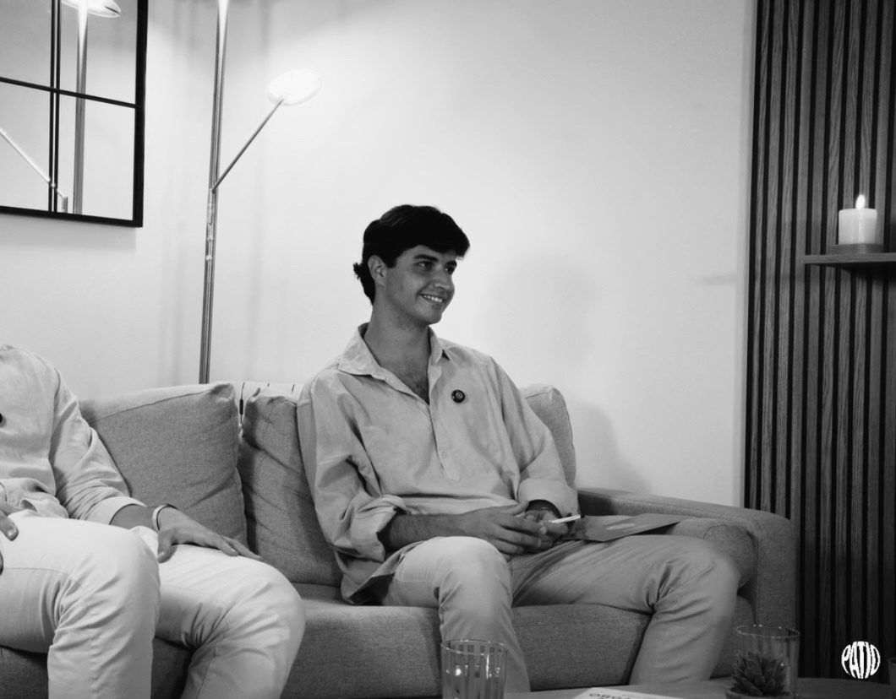
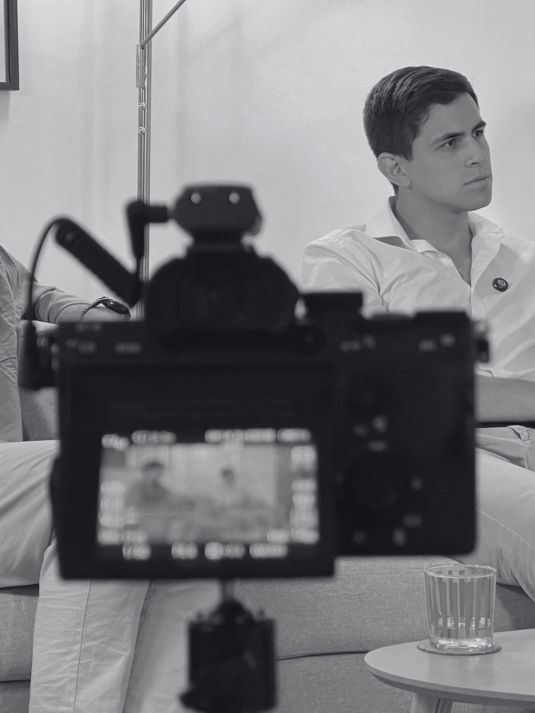
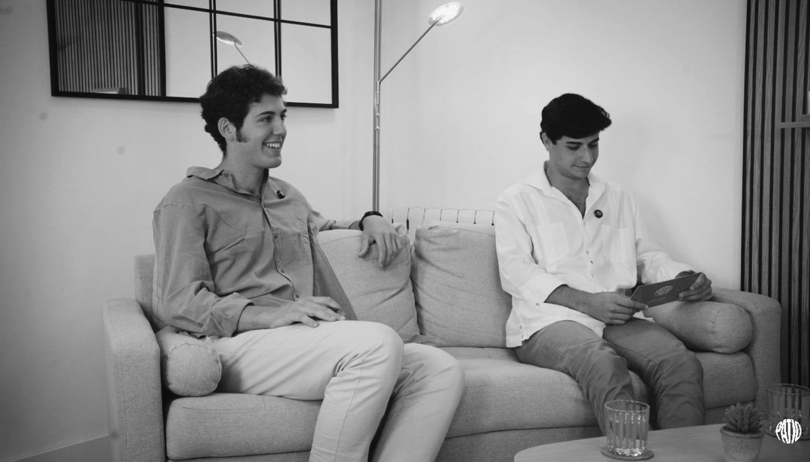
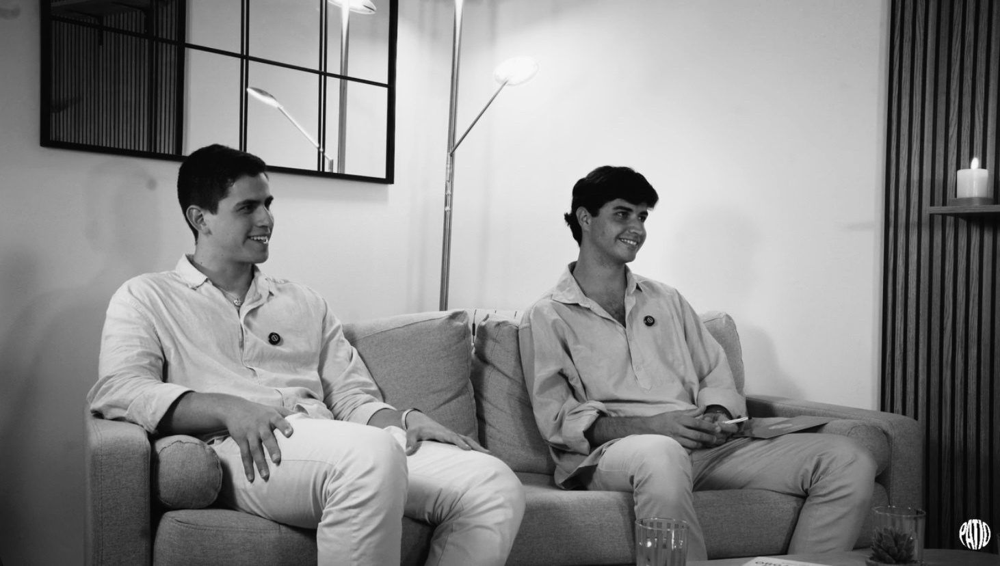
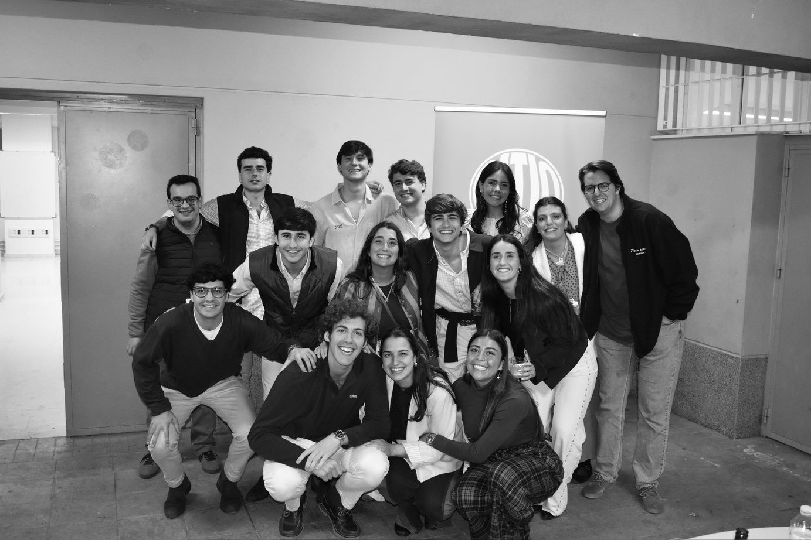

Ignacio Arévalo
Desde Córdoba, España
El timón del proyecto. Señala el camino; su atención a los detalles y su capacidad para trabajar bajo presión hacen que todo encaje.
Bienvenido.
No queremos decirte qué tienes que hacer con tu vida, queremos que salgas con ganas de hacer más con ella.
De conocer, arriesgar, construir, ayudar. De vivir con ambición y propósito. De soñar.

El Patio es una asociación que nace de tres amigos jóvenes que por fin dieron un paso adelante. Traemos a personas que tienen algo valioso que enseñar y las sentamos delante de gente con inquietudes que quiere hacer algo grande con su vida.
Unas veces será delante de ti, en los patios presenciales. Otras, alrededor de una mesa, con el podcast. Pero lo más importante eres tú.
Pero eso no es suficiente. Hace falta quien se atreva a hacerla realidad.

Desde Córdoba, España
El timón del proyecto. Señala el camino; su atención a los detalles y su capacidad para trabajar bajo presión hacen que todo encaje.

Desde Córdoba, España
El motor del proyecto. Soñador incansable y generador de ideas. Cuando cree en algo no se detiene hasta hacerlo realidad.

Desde Lima, Perú
El ancla del proyecto. Aporta sensibilidad y compromiso. Le gusta hablarlo todo y cuida cada paso.

Al igual que tú, nuestro staff también es El Patio. Gracias por hacerlo posible.